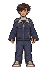
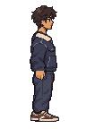
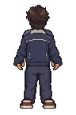
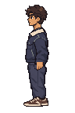
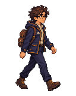
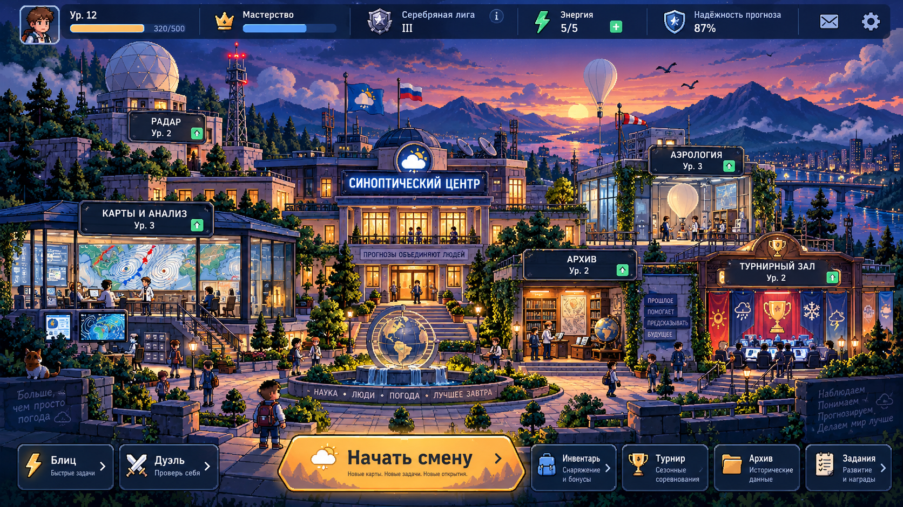
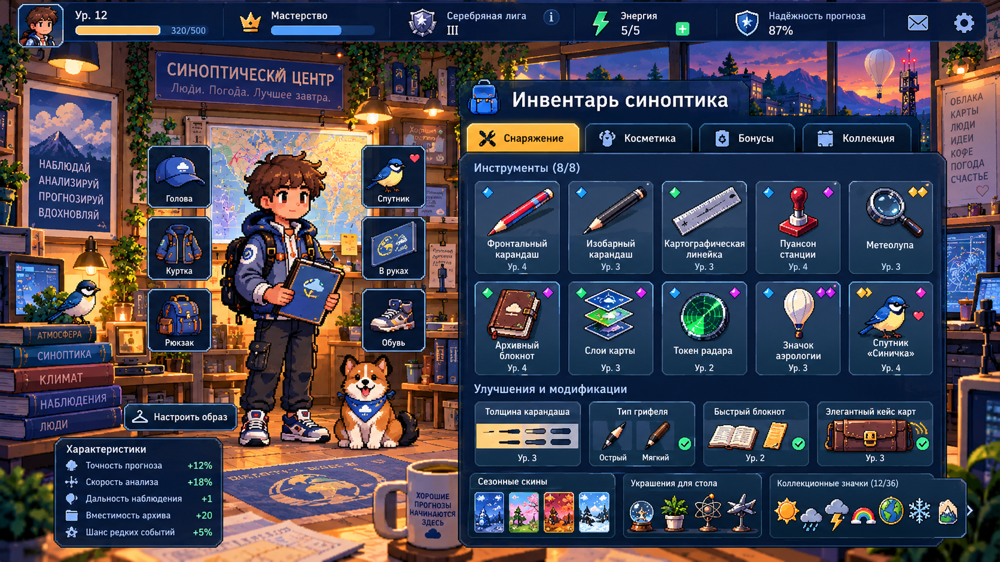

Один персонаж, совместимые части
Стенд для сравнения подготовленной фигуры с художественными ориентирами кампуса и инвентаря. Это отдельный документ проверки, не экран игры и не новая игровая функция.
Четыре ракурса на общей сетке
Кадр 96×144, опора (48,136). Направляющие показывают центр и линию контакта; они не являются частью изображения.
Спереди
down / front
preview-default-down.pngВправо
right
preview-default-right.pngСо спины
up / back
preview-default-up.pngВлево
left
preview-default-left.pngЛицо и материалы
Читаются ли глаза и выражение на нативной сетке? Сохранились ли ткань, швы, волосы и обувь после сокращения палитры?
Посадка и свободное место
Есть ли запас сверху, целые кисти, непрерывная шея и стыки одежды? Поместятся ли головной убор, инструмент и движение?
Согласованность ракурсов
Сохраняются ли рост, плечи, талия, обувь и опора? Разворот не должен менять анатомическую руку или сторону значка.
Проверка контекстного размера
Условные композиционные примеры. Они не подтверждают интеграцию в Phaser, подключение к аккаунту или работу смены.
Небольшая фигура рядом с ориентиром R01

R01 · ориентир стиляИгрок показан с уменьшением ½. Наблюдатель — исходная подготовленная поза, не кадр действующей сцены. Сравниваются характер силуэта и плотность деталей; окончательный масштаб требует настоящего снимка кампуса.
Композиция головы и плеч
Та же внешность в небольшой рамке. Это демонстрационный кадр фигуры, не готовый самостоятельный авторский портрет.
Крупный портрет оценивается отдельно: узнаваемость образа общая, художественные требования к лицу и детализации различаются.
Утверждённые художественные ориентиры
Оригиналы пользовательских концептов. Их разрешение не является логической сеткой персонажа. Надписи, ресурсы и механики на концептах не переносятся автоматически.


R01 · кампус
Масштаб людей, тёплые детали, спокойная научная среда, читаемость фигуры среди окружения.


R04 · инвентарь
Выразительные волосы и лицо, одежда с материальными деталями, узнаваемые инструменты, крупная фигура.
Границы принятого набора
- Просмотрены отдельные варианты и рискованные сочетания: комплекты интерфейса, волосы, сумки и инструменты, палитры, спутники.
- Стойка содержит четыре временные фазы с двумя высотами верхней части при неподвижных стопах. Спутники статичны; ходьба, осмотр и активные реакции не приняты.
- Настоящие инвентарь, кампус и смена, изоляция черновика, уменьшенное движение и расходы памяти проверяются отдельно от этих картинок.
- Решение и контрольные суммы записаны в отдельном протоколе. Этот стенд не выставляет автоматический PASS и не утверждает, что просмотрены все 1 944 000 сочетаний.